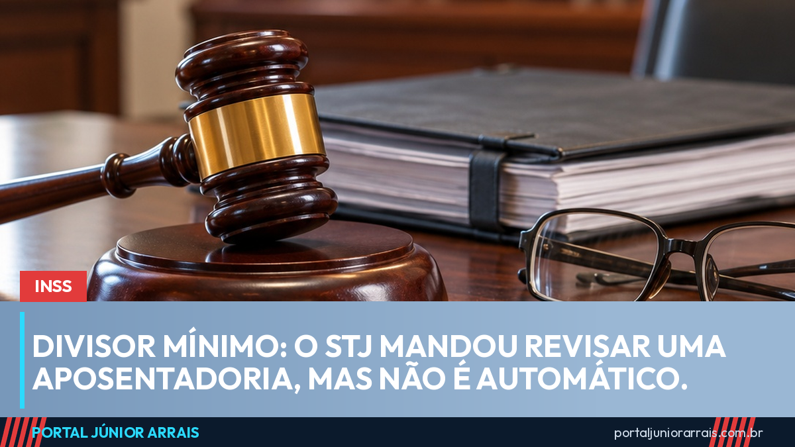

STJ afasta o divisor mínimo numa aposentadoria, mas a revisão não é automática

Uma decisão do Superior Tribunal de Justiça (STJ) voltou a circular nas redes como se fosse uma "revisão liberada" para aposentados. Não é bem assim. Em 18 de agosto, a 2ª Turma do STJ afastou o chamado divisor mínimo no cálculo de uma aposentadoria e mandou o INSS recalcular o benefício e pagar as diferenças (REsp 2.193.427/RS, relatoria da ministra Maria Thereza de Assis Moura). A decisão, porém, vale para aquele processo. Não obriga o INSS a revisar ninguém automaticamente.
O que é o divisor mínimo
O valor da aposentadoria parte de uma média: o INSS soma os salários de contribuição e divide o total por um número. Quando a pessoa tem poucas contribuições no período considerado, a lei pode exigir que a divisão seja feita por um número mínimo — o divisor mínimo. Na prática, dividir por um número maior do que a quantidade de contribuições existentes puxa a média para baixo.
O ponto que interessa é o calendário. A reforma da Previdência de 2019 (Emenda Constitucional 103) mudou o cálculo e não trouxe um divisor mínimo. Ele só voltou a existir com a Lei 14.331, de maio de 2022, que fixou o mínimo de 108 contribuições. Entre a reforma, em novembro de 2019, e a nova lei, em maio de 2022, houve um intervalo sem essa exigência — e é nele que se concentram as discussões na Justiça.
O que o STJ decidiu e o que não decidiu
- Decidiu: naquele caso, de um segurado que já tinha mais de 15 anos de contribuição antes de julho de 1994, o divisor mínimo não podia ser aplicado, e o benefício deve ser recalculado com pagamento dos atrasados.
- Não decidiu: não é recurso repetitivo nem súmula. Não cria uma revisão geral, não manda o INSS rever benefícios de ofício e não significa que toda aposentadoria concedida no período vai aumentar.
Cada caso depende das datas, do histórico de contribuições e da forma como o benefício foi calculado. Há situações em que o recálculo não muda nada — ou em que o risco é maior que o ganho. Como mostramos no fim da revisão da vida toda, promessa de aumento generalizado costuma terminar em frustração.
Cuidado com golpe
Decisão de tribunal que viraliza atrai quem vende revisão como se fosse dinheiro certo. O roteiro se repete: mensagem dizendo que o aposentado "tem dinheiro a receber do STJ", cobrança de taxa adiantada para "dar entrada" e pedido de senha do gov.br. Nenhum órgão do governo cobra taxa nem pede Pix ou senha para pagar diferença de benefício.
Se você se aposentou entre o fim de 2019 e maio de 2022 e quer saber se o cálculo usou esse divisor, procure um profissional de sua confiança para analisar a carta de concessão antes de tomar qualquer decisão.
Conteúdo informativo — não substitui orientação individualizada sobre o seu caso.
Júnior Arrais · Editor do Portal Júnior Arrais
Comunicador de Ubá (MG). Escreve todos os dias sobre benefícios sociais, INSS, trabalho e economia do dia a dia, a partir do Diário Oficial, de portarias e de fontes oficiais, em linguagem simples. Conheça a linha editorial e a política de correções do portal.